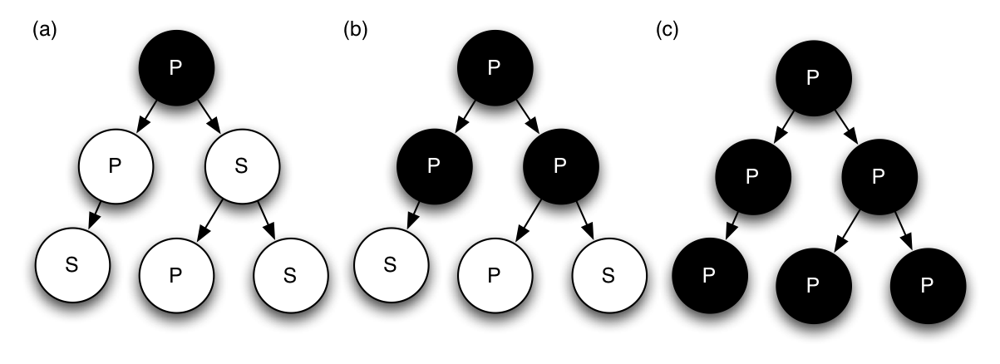

Deterministic Execution in a Java-like Language
Niels Widger
niels.widger@unh.edu
Table of Contents
Thesis
A Java-like programming language can be executed deterministically using Deterministic Shared Multiprocessing (DMP) with less overhead than a C-like programming language.
Background
Thread Interleavings
| thread 1 | thread 2 |
|---|---|
| load count | |
| store count | |
| load count | |
| load count | store count |
| store count | |
| load count | |
| load count | |
| store count | |
| store count |
- Source of non-determinism, caused by
- OS scheduler
- Cache state
- I/O delays
- Could execute threads serially, but we can do better
Communicating Instructions
- Load/store instructions to shared memory
- Modify behavior of other threads
- Enforce ordering of communicating instructions, others do not matter
Deterministic Shared Multiprocessing
- Dynamic run-time enforcement of determinism
- Guarantees deterministic ordering of all shared memory accesses for a given input.
- Works on arbitrary code
- Aims to do so without sacrificing performance
How does it work?
- Execute non-communicating instructions during parallel mode
- Recover parallelism
- Without interthread communication, thread interleaving does not affect program output
- Serialize execution during interthread communication

Ownership Table
- Used to detect communicating instructions
- Track ownership information for each memory location
- Private - accessible only to owner
- Shared - read-only by everyone
- Access unrestricted in serial mode
- Granularity - byte, word, page, etc.

Ownership Graph
solid = proceed immediately, dotted = block until serial mode

Previous DMP Implementations
- CoreDet - DMP in software
- Modified LLVM compiler instruments load/store instructions
- Arbitrary
C/C++code - Linked with run-time framework
- Ownership table stored in shared memory
- Reduced serial mode
- Results: Average slowdown of 110% - 600%
- Good enough for debugging, maybe for deployment!
DMP Summary
- Execute arbitrary code deterministically
- Deterministic ordering of communicating instructions
- Detect interthread communication in parallel mode, defer until serial mode
- Ownership table used to detect communicating instructions
maTe - a Java-like programming language
- Pure OO programming language
- Executed in virtual machine
- Grammar, instruction set and machine architecture heavily based on Java
- Single-threaded
Architecture

maTe instruction set
aconst_null |
invokespecial |
aload |
invokenative |
areturn |
invokevirtual |
astore |
new |
checkcast |
newint |
dup |
newstr |
getfield |
out |
goto |
putfield |
ifeq |
refcmp |
in |
return |
maTe instruction set
aconst_null |
invokespecial |
aload |
invokenative |
areturn |
invokevirtual |
astore |
new |
checkcast |
newint |
dup |
newstr |
getfield |
out |
goto |
putfield |
ifeq |
refcmp |
in |
return |
Ownership Depth
Implementation
- Compiler Changes
- Virtual Machine Changes
Compiler Changes
Real class (float wrapper)
class Real extends Object { native Real(); native Real(Real r); native Real(Integer i); native Real add(Real r); native Real subtract(Real r); native Real multiply(Real r); native Real divide(Real r); native Real greaterThan(Real r); native Real lessThan(Real r); native Real greaterThanEqual(Real r); native Real lessThanEqual(Real r); native Integer not(); native Real minus(); native Real operator + (Real r); native Real operator - (Real r); native Real operator * (Real r); native Real operator / (Real r); native Integer operator > (Real r); native Integer operator < (Real r); native Integer operator >= (Real r); native Integer operator <= (Real r); native Integer operator ! (); native Real operator - (); native Integer equals(Object obj); native Integer hashCode(); native String toString(); native Real squareRoot(); }
synchronized blocks
for (i = 0; i < 10; i = i + 1) { synchronized (obj) { if (obj.field != null) return obj.field; } }
- Use new
monitorenter/monitorexitinstructions - Monitor stack ensures necessary
monitorexitinstructions are emitted for all execution paths.
Thread class
class Thread extends Object { native Thread(); native Object start(); // begin execution of run() native Object run(); // overridden by subclass native Object join(); native Object sleep(Integer millisec); }
- Java-based threading model
Object class wait / notify methods
class Object { native Object notify(); native Object notifyAll(); native Object wait(); native Object wait(Integer timeout); }
- Asynchronous events
Compiler Changes
(aka things you take for granted)
forloops
for (i = 0; i < 10; i = i + 1) { ... }
- Boolean
&&and||operators
if ((a && b) || (c && d)) { ... }
!=,<=and>=operators
if (a != b) { ... } if (a <= b) { ... } if (a >= b) { ... }
Virtual Machine Changes
Multithreaded Architecture

Implementing Threads
- Each
Threadgets its own PC register & VM stack - Use
pthreadsthreading library - Use
pthreads_mutex_tfor object monitors
Threading Performance Enhancements
- Remove lots of locks
- Reduce heap accesses
Integer/Stringcache- Per-thread object reference / free object cache
Implementing DMP in maTe
- Control execution of threads
- Instrument
getfield/putfieldinstructions - Track owner of each object
- Prevent blocking system calls
Design Goals
- Enable/disable without recompiling
mvm myclass.class; # DMP disabled mvm -p myclass.class; # DMP enabled
- Minimize performance penalty when disabled
- Allow object- or thread-specific behavior
- Compile DMP code out of virtual machine
./configure --enable-dmp=no && make && sudo make install; mvm -p myclass.class; # -p = DMP enabled Invalid switch option 'p'
Design
- Global
dmpmodule. - DMP-specific modules for
object,thread,nlock(object monitor) andtable.
Global dmp module
- Maintain thread set in creation order
int dmp_add_thread(struct dmp *d, int r); /* called when Thread.start() begins */ int dmp_remove_thread(struct dmp *d, int r); /* called when Thread.run() terminates */
- Control thread execution
- Block threads at end their serial/parallel segment
- Wake each thread in creation order during serial mode
int dmp_thread_block(struct dmp *d, struct thread_dmp *td); /* called by thread at end of segment */
- Implements default ownership table policy
- Indicate if thread can proceed immediately with load/store or must block until serial mode
- Indicate if ownership of object should be changed and how
/* takes current owner ID accessing thread ID * returns thread action (proceed/block) and owner action (shared/private/none) */ int dmp_shm_read(struct dmp *d, int c, int r, enum dmp_thread_action *ta, enum dmp_owner_action *oa); int dmp_shm_write(struct dmp *d, int c, int r, enum dmp_thread_action *ta, enum dmp_owner_action *oa);
DMP-specific modules
object,thread,tableandnlockinstances store pointer to DMP-specific module instance
int object_create(struct class *c, uint32_t n, struct object **o) { #ifdef DMP if (dmp == NULL) object->dmp = NULL; else object->dmp = dmp_create_object_dmp(dmp, object); #endif }
- Without DMP, performance penalty is
dmppointer field and extra pointer comparisons
int object_load_field(struct object *o, int i) { #ifdef DMP if (o->dmp != NULL) object_dmp_load(o->dmp, i); #endif return o->fields[i]; }
DMP-specific modules cont'd.
- Each instance given an attributes record
- Attributes contain operations table implementing DMP operations for that module
- Attributes could be made object- or thread-specific
Object DMP
- Detect communicating
getfield/putfieldinstructions - Proceed or block thread and change
ownerattribute after consultingdmp_shm_read/dmp_shm_write
struct object_dmp_ops { int (*load)(struct object_dmp *od, int i); /* called inside getfield */ int (*store)(struct object_dmp *od, int i, int r); /* called inside putfield */ int (*chown)(struct object_dmp *od, int n); /* change object owner */ }; struct object_dmp_attr { int owner; /* current owner ID, 0 == shared */ int depth; /* ownership depth used by chown() */ struct object_dmp_ops *ops; };
Thread DMP
- Handle thread creation/destruction
- Add/remove
threadfromdmpmodule withdmp_add_thread/dmp_remove_thread - Increment
threadquantum instruction counter, block withdmp_thread_blockwhen quantum in finished - Use non-blocking
join/sleepimplementations
struct thread_dmp_ops { int (*thread_creation)(struct thread_dmp *td); /* called in Thread.start() */ int (*thread_start)(struct thread_dmp *td); /* called at top of Thread.run() */ int (*thread_destruction)(struct thread_dmp *td); /* called at bottom of Thread.run() */ int (*thread_join)(struct thread_dmp *td); /* called in Thread.join() */ int (*thread_sleep)(struct thread_dmp *td, int32_t m); /* called in Thread.sleep() */ int (*execute_instruction)(struct thread_dmp *td, uint32_t o); /* called in fetch/execute cycle */ }; struct thread_dmp_attr { enum thread_dmp_serial_mode serial_mode; /* full/reduced serial mode */ int lock_count; /* # of acquired locks, 0 == end serial segment */ int quantum_size; /* instructions per quantum */ uint64_t instruction_counter; /* instructions executed in current quantum */ struct thread_dmp_ops *ops; };
NLock DMP (Object Monitors)
- Use non-blocking versions of
pthread_mutex_tfunctions - Increment/decrement DMP-specific
threadmodule's lock count
struct nlock_dmp_ops { int (*lock)(struct nlock_dmp *nd); /* called in monitorenter */ int (*unlock)(struct nlock_dmp *nd); /* called in monitorexit */ }; struct nlock_dmp_attr { struct nlock_dmp_ops *ops; };
Table DMP
- Hash table implemented natively inside virtual machine
- Table key/values must be guarded as if they were actual Object fields
struct table_dmp_ops { int (*load)(struct table_dmp *td); /* load table field */ int (*store)(struct table_dmp *td); /* store table field */ }; struct table_dmp_attr { struct table_dmp_ops *ops; };
DMP Statistics
- With
-D, prints DMP-related statistics on program terminationRounds: 9 Parallel time (seconds): 0.323777 (37.07164%) Serial time (seconds): 0.549605 (62.92837%) ============================================================ Total time (seconds): 0.873382 (100.0%) Max parallel segment (seconds): 0.158997 Min parallel segment (seconds): 0.000002 Avg parallel segment (seconds): 0.071304 Max serial segment (seconds): -1.000000 Min serial segment (seconds): 0.000378 Avg serial segment (seconds): 0.201108 Reads: 61957 (93.77620%) Writes: 4112 (6.22380%) ============================================================ Total: 66069 (100.0%) Total (shared) [?]: 34232 (51.81250%) Total (private mine): 31825 (48.16934%) Total (private not mine) [*]: 12 (0.01816%) ============================================================ Total: 66069 (100.0%) Reads (shared): 34224 (55.23831%) Reads (private mine): 27721 (44.74232%) Reads (private not mine) [*]: 12 (0.01937%) ============================================================ Total: 61957 (100.0%) Writes (shared) [*]: 8 (0.19455%) Writes (private mine): 4104 (99.80545%) Writes (private not mine) [*]: 0 (0.00000%) ============================================================ Total: 4112 (100.0%) [*] Reads/writes required blocking [?] Writes required blocking
Garbage Collection
- Determining when a collection cycle will occur is not deterministic
- Serial collector only, run at end of serial mode when heap is
using
90%or more of its available memory.
Results
Racey
- Deterministic stress test
- Ran 10,000 times for each configuration
Benchmarks
- Parallel radix sort - Multithreaded radix sort of 500 random 16-bit integers
- Jacobi - uses the Jacobi method to simulate temperature changes on a 20x25 plate
- Parallel DPLL - Multithreaded boolean satisfiability using the DPLL algorithm
Parameters
- threads - 2, 4, 8 or 16 threads
- quantum size - 1000, 10000, and 100000 instructions
- full serial mode or reduced serial mode
- ownership table granularity - 1, 5 and 10 depth
Evaluation
- overhead - measure difference in execution time when compared to a non-DMP virtual machine
- measure difference in performance when parameters are changed
Each benchmark was run 10 times for each combination of parameters. Run-times are averages.
Radix
- No synchronized blocks in implementation, threads operate on disjoint indexes of shared table
- Average overhead 54% - 4,520%
- Fastest DMP run 2.65 seconds, fastest non-DMP run 1.27 seconds
- Not sensitive to choice of serial mode
- Larger ownership depth results in worse execution times, likely due to cost of rewriting ownership of all entries in shared table
Jacobi
- Number of threads fixed at 20
- Average overhead 27% - 1,117%
- Fastest DMP run 3.71 seconds, fastest non-DMP run 2.92 seconds
- Calculates temperature change of plate using two shared tables
- Clear advantage to using reduced serial mode
- 3.71 / 16.00 seconds execution time
- 1,842 vs. 17,616 blocking reads/writes
- 175 vs. 3,081 rounds
class Worker extends Thread { Object run() { for (i = 0; i < columns; i = i + 1) { synchronized (oldp) oldp.get(...); // get old temperature synchronized (newp) tmp = newp.put(...); // calculate new temperatue synchronized (oldp) change = oldp.get() - tmp; // calculate temperature change } } }
Parallel DPLL
- Threads traverse tree of possible
true/falsepermutations for the problem variables, stealing from other threads when they run out of work. - Average overhead -23% to 2,789%
- Fastest DMP run .95 seconds, fastest non-DMP run 0.71 seconds
- Showcases ineffiency of maTe virtual machine
- Some DMP runs beat non-DMP runs by a small margin
- Not sensitive to ownership table depth for 2/4 threads,
but 8/16 show extreme jumps:
- 8 threads - 11.47 vs. 21.75 seconds
- 16 threads - 21.29 vs. 176.84 seconds
Conclusions
- Results: Average slowdown of 19% - 2800%
- Results do not back up thesis
- Overhead may still be acceptable for debugging
- There are still advantages
- No recompiling
- Quickly tweak DMP parameters with command-line arguments
- Implementing efficient multithreaded virtual machine is difficult
- Poor multithreaded performance, did not scale
Future Work
- Adaptive ownership table policy
- Source code annotations/static analysis optimizations
- Improve multithreaded performance
- Optimize maTe compiler
- Longer-running benchmarks
- Implement DMP in real Java virtual machine